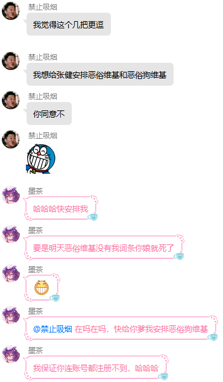
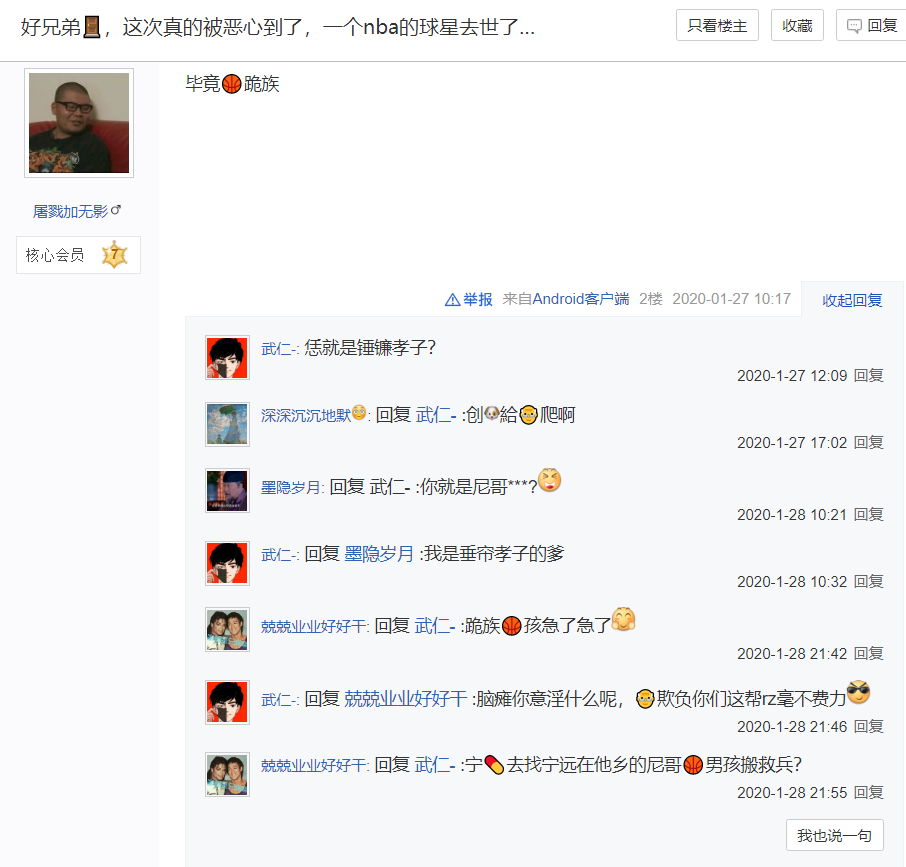
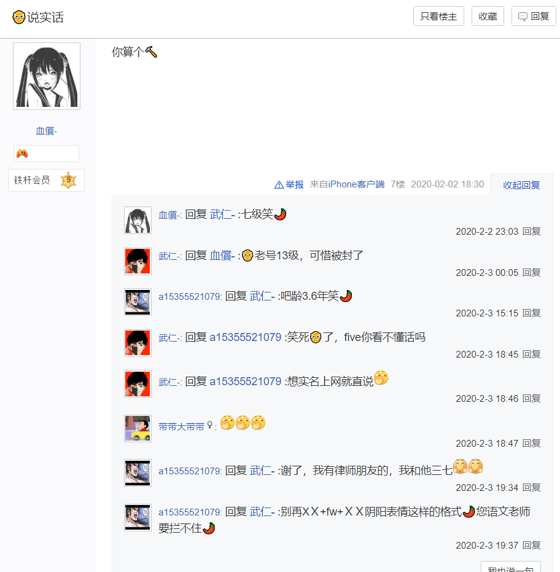
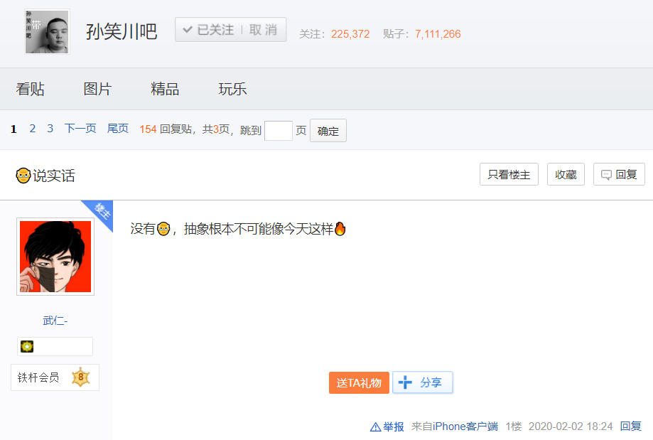

新概念设计
本条目部分内容由受害者或当事人亲自撰写或提供。
本条目总阅读量次
照片 |
看什么看，没见过小鬼啊 |
姓名 |
武晓宇 |
能力 |
待定 |
必杀技 |
待定 |
硬度 |
待定 |
武晓宇，彻彻底底的MC痴，早期为膜蛤小鬼，后期变成键政恶俗小鬼，具体可以看武晓宇曾发过的帖子以及在QQ的表现，反华精日分子，其母为刘利英，其父为武军生。贴吧ID马扁钱先生（已被屏蔽），mct金坷垃（已被屏蔽），rozu835，芊纷，喷榘，凉快凉快凉是我，郭晓凯祖宗。神必代码：410526********0093，生日：2002年12月6日，籍贯：河南省滑县，地址：北京市海淀区增光路后白堆子3号楼4门602，手机号：13522393166（为母亲使用）
武晓宇最早出现在2017年新年时期高雅人士乐膜协的群内，那时候武晓宇突然跳出来在膜协群里打喷和送妈，导致诸位恶俗人士注意到了此人。在三浦海岸吧和铃木拉面摊吧建立后，武晓宇长期在贴吧魔怔。
武晓宇曾靠心态意淫自己暴打了自救吧吧主蜡萝莉和中二喷神灭汝。
武晓宇曾被人吸引蛊惑去陈丹阳地盘上冲塔，陈丹阳看他跑过来送妈，然后拿ps3体暴打了武晓宇，可惜武晓宇的喷人技术泰国第几，喷词短句甚至还打不过陈丹阳。
值得注意的是，武晓宇在亲妈被宋旺霖致电之后仍然不肯悔改，继续充当恶俗小鬼。
2018年下半年到2019年初，在北法等恶俗小鬼创立的新式以钓其他恶俗小鬼为乐的恶俗战争中，武晓宇借此机会注册了与自己的QQ帐号同名的恶俗维基ID：释明空先辈（也可以看出武晓宇也喜欢跟风嗨粉）在恶俗维基帮助冯国权大量炒作，并和冯国权一同在QQ钓鱼。
武晓宇曾在QQ群内多次利用恶俗狗维基管理员“耀武扬威”（张健）的户籍图片对张健文游，甚至声称要把张健挂到恶俗维基和恶俗狗维基一起炒作，至今仍未见到两站有张健的单独词条。
裂变为恶俗小鬼的武晓宇同时也是跟风键政者，武晓宇此前的头像是小熊维尼，同时又将键政言论的相关图片发在于女士的QQ群内，后来将头像换成吴京，根据贴吧揭露他的成员描述，武晓宇曾发布了大量键政言论。
张笛吧潜伏的某位有一定网暴能力的恶俗小鬼为徇私仇勾结了违法网站es狗维基，打着反es的名义编造事实人肉害人，他还联合es狗维基逼迫一位被其人肉的无关路人在张笛吧发帖认错，并扬言人肉威胁多位无辜政史圈网友，其中武晓宇带头以恶俗狗维基的名义与张笛吧正义网友对骂;武晓宇不堪正义网友的辱骂，主动到张笛吧发帖送妈，遭到吧务正删正封。并有神秘人顺着武晓宇的贴吧皮囊将其二次出道，武晓宇被二次出道后，恶俗狗维基取消了其管理员身份，但并没有驱逐武晓宇，而是放任其以恶俗狗维基管理员的身份，继续行反华精日等违法犯罪之事，由此可见恶俗狗维基只是作作样子，现在想撇清关系为时已晚。
2020年一月末，武晓宇在正义网友的围攻下，透露了舔狗陈越麒(站内ID:反esu2、大黑内传)并未退网，而是以新ID“ 不动の大图书馆”继续行违法犯罪之事，有待核实。链接如下：http://tieba.baidu.com/p/6463333740
2020年二月， 武晓宇在孙笑川吧发帖，高调炫耀恶俗狗维基管理员的身份,为了装逼还出道了无关路人，劣性难改至此，刘利英和武军生也难逃教儿无方之罪。
{kind=link}
{kind=link}